源代码结构
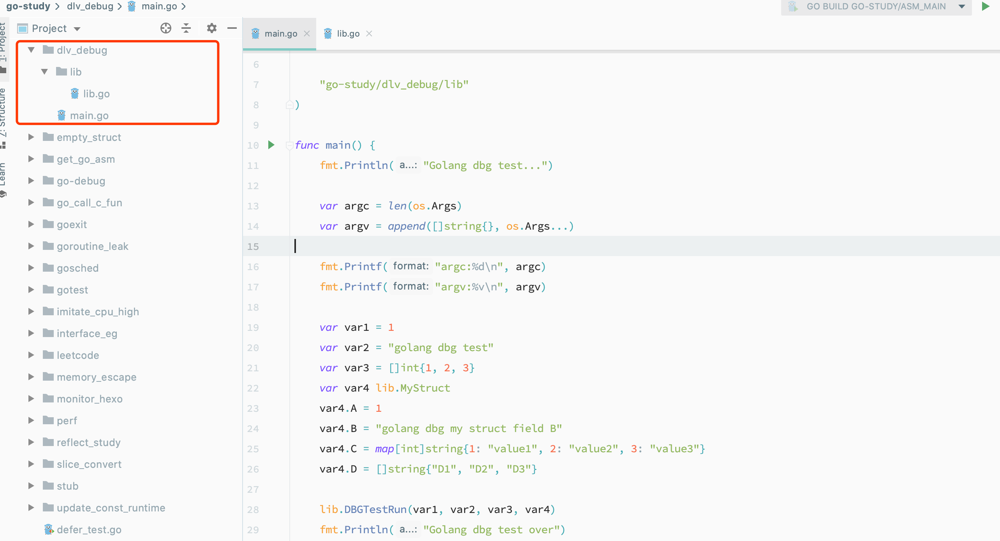
1 | package main |
1 | package lib |
编译目标程序时，加入相应的编译选项生成调试信息，不然没法调试了：
GOOS=linux go build -gcflags=”-l -N” go-study/dlv_debug
我是在 docker 中装的 gdb，所以交叉编译，然后复制到容器中：
docker cp dlv_debug 913ecec6c8c3:/workdir/
gdb
启动调试程序
root@913ecec6c8c3:/workdir# gdb ./dlv_debug GNU gdb (Ubuntu 9.1-0ubuntu1) 9.1 Copyright (C) 2020 Free Software Foundation, Inc. License GPLv3+: GNU GPL version 3 or later <http://gnu.org/licenses/gpl.html> This is free software: you are free to change and redistribute it. There is NO WARRANTY, to the extent permitted by law. Type "show copying" and "show warranty" for details. This GDB was configured as "x86_64-linux-gnu". Type "show configuration" for configuration details. For bug reporting instructions, please see: <http://www.gnu.org/software/gdb/bugs/>. Find the GDB manual and other documentation resources online at: <http://www.gnu.org/software/gdb/documentation/>. For help, type "help". Type "apropos word" to search for commands related to "word"... Reading symbols from ./dlv_debug... warning: Missing auto-load script at offset 0 in section .debug_gdb_scripts of file /workdir/dlv_debug. Use `info auto-load python-scripts [REGEXP]' to list them. (gdb)在
main.main函数上设置断点b(gdb) (gdb) b main.main Breakpoint 1 at 0x493fc0: file /Users/fudenglong/workdir/go/src/go-study/dlv_debug/main.go, line 10. (gdb)带参数启动程序
r(gdb) r arg1 arg2 Starting program: /workdir/dlv_debug arg1 arg2 warning: Error disabling address space randomization: Operation not permitted [New LWP 52] [New LWP 53] [New LWP 54] [New LWP 55] Thread 1 "dlv_debug" hit Breakpoint 1, main.main () at /Users/fudenglong/workdir/go/src/go-study/dlv_debug/main.go:10 10 func main() {在
lib/lib.go上通过行号在函数DBGTestRun入口处设置断点：b filename:line(gdb) b lib/lib.go:16 Breakpoint 5 at 0x493900: file /Users/fudenglong/workdir/go/src/go-study/dlv_debug/lib/lib.go, line 16.查看当前已经设置的断点
info b(gdb) info b Num Type Disp Enb Address What 1 breakpoint keep y 0x0000000000493fc0 in main.main at /Users/fudenglong/workdir/go/src/go-study/dlv_debug/main.go:10 breakpoint already hit 1 time 5 breakpoint keep y 0x0000000000493900 in go-study/dlv_debug/lib.DBGTestRun at /Users/fudenglong/workdir/go/src/go-study/dlv_debug/lib/lib.go:16禁用断点
dis n(gdb) dis 1 (gdb) info b Num Type Disp Enb Address What 1 breakpoint keep n 0x0000000000493fc0 in main.main at /Users/fudenglong/workdir/go/src/go-study/dlv_debug/main.go:10 breakpoint already hit 1 time 5 breakpoint keep y 0x0000000000493900 in go-study/dlv_debug/lib.DBGTestRun at /Users/fudenglong/workdir/go/src/go-study/dlv_debug/lib/lib.go:16删除断点
del n(gdb) del 1 (gdb) info b Num Type Disp Enb Address What 5 breakpoint keep y 0x0000000000493900 in go-study/dlv_debug/lib.DBGTestRun at /Users/fudenglong/workdir/go/src/go-study/dlv_debug/lib/lib.go:16断点后继续执行
c(gdb) c Continuing. Golang dbg test... argc:3 argv:[/workdir/dlv_debug arg1 arg2] Thread 1 "dlv_debug" hit Breakpoint 5, go-study/dlv_debug/lib.DBGTestRun (var1=1, var2=..., var3=..., var4=...) at /Users/fudenglong/workdir/go/src/go-study/dlv_debug/lib/lib.go:16 16 func DBGTestRun(var1 int, var2 string, var3 []int, var4 MyStruct) {查看代码
l(gdb) l 11 B string 12 C map[int]string 13 D []string 14 } 15 16 func DBGTestRun(var1 int, var2 string, var3 []int, var4 MyStruct) { 17 fmt.Println("DBGTestRun Begin!") 18 waiter := &sync.WaitGroup{} 19 20 waiter.Add(1)单步执行
n(gdb) n 17 fmt.Println("DBGTestRun Begin!")显示变量信息
p(gdb) p var1 $1 = 1 (gdb) p var2 $2 = 0x4c45d3 "golang dbg test" (gdb) p var3 $3 = {array = 0xc00013c040, len = 3, cap = 3} (gdb) p var4 $4 = {A = 1, B = 0x4c6e7a "golang dbg my struct field B", C = 0xc0001201b0, D = {array = 0xc0001201e0, len = 3, cap = 3}}查看调用栈
bt，切换调用栈f n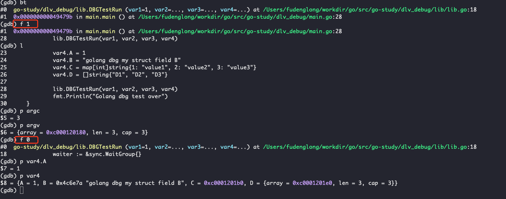
显示 goroutine 列表
(gdb) info goroutines * 1 running runtime.systemstack_switch 2 waiting runtime.gopark 3 waiting runtime.gopark 4 waiting runtime.gopark 5 waiting runtime.gopark * 6 running syscall.Syscall在某个 goroutine 内执行操作
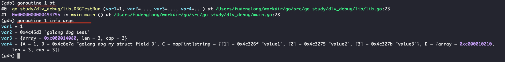
dlv
Delve is a debugger for the Go programming language. The goal of the project is to provide a simple, full featured debugging tool for Go
带参数启动程序
dlv exec ./dlv_debug -- arg1 arg2root@913ecec6c8c3:/workdir# ./dlv exec ./dlv_debug -- arg1 arg2 Type 'help' for list of commands. (dlv)设置断点
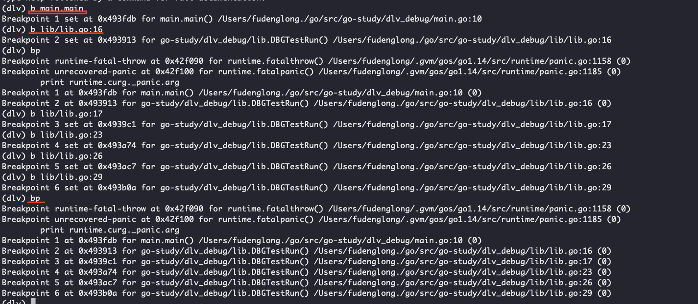
启动程序，运行到下一个断点
c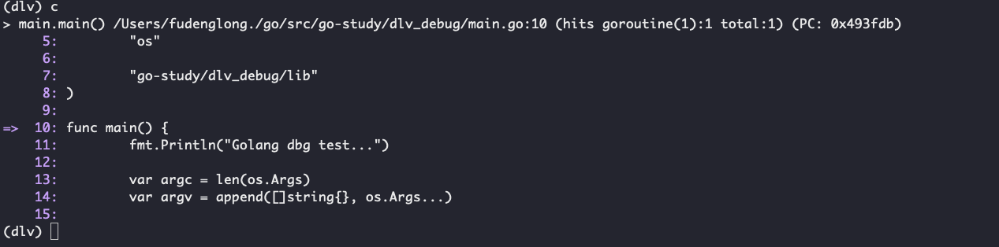
查看代码
ls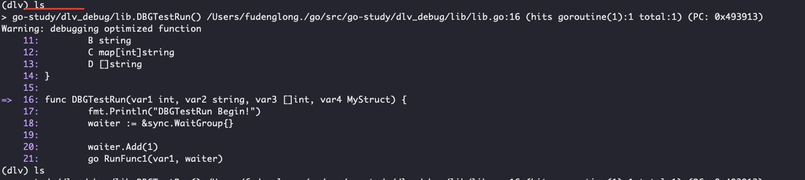
查看当前调用栈
(dlv) bt 0 0x0000000000493913 in go-study/dlv_debug/lib.DBGTestRun at /Users/fudenglong./go/src/go-study/dlv_debug/lib/lib.go:16 1 0x000000000049479b in main.main at /Users/fudenglong./go/src/go-study/dlv_debug/main.go:28 2 0x0000000000431572 in runtime.main at /Users/fudenglong/.gvm/gos/go1.14/src/runtime/proc.go:203 3 0x000000000045bef1 in runtime.goexit at /Users/fudenglong/.gvm/gos/go1.14/src/runtime/asm_amd64.s:1373 (dlv)查看变量信息
vars可以查看全部包级的变量，可以使用正则参数选择想查看的局部变量。
args可以查看函数的参数
locals查看局部边变量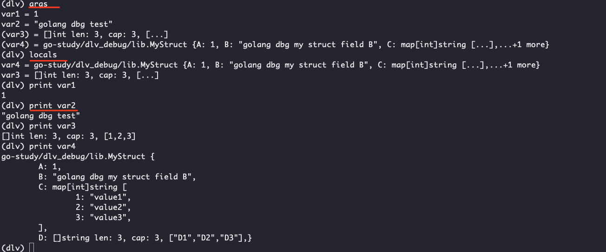
切换到相应的调用栈执行命令
bt和frame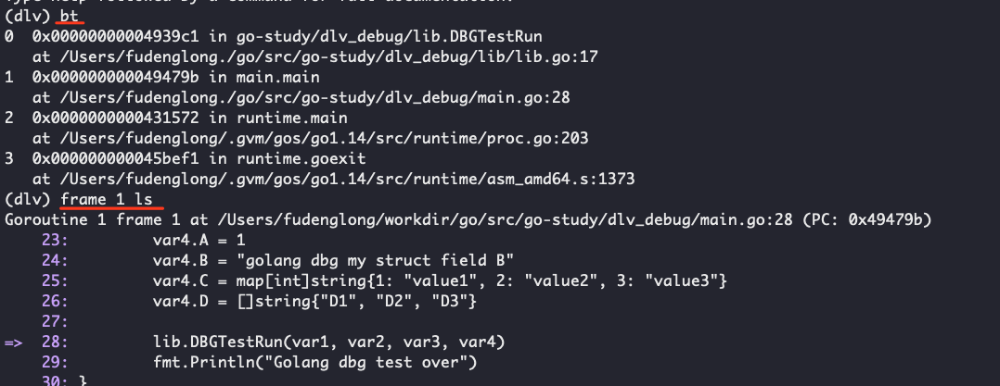
查看
goroutines信息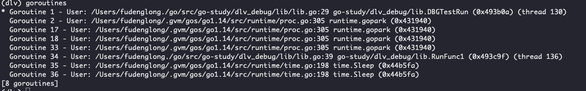
切换到 goroutine 执行命令，
goroutine n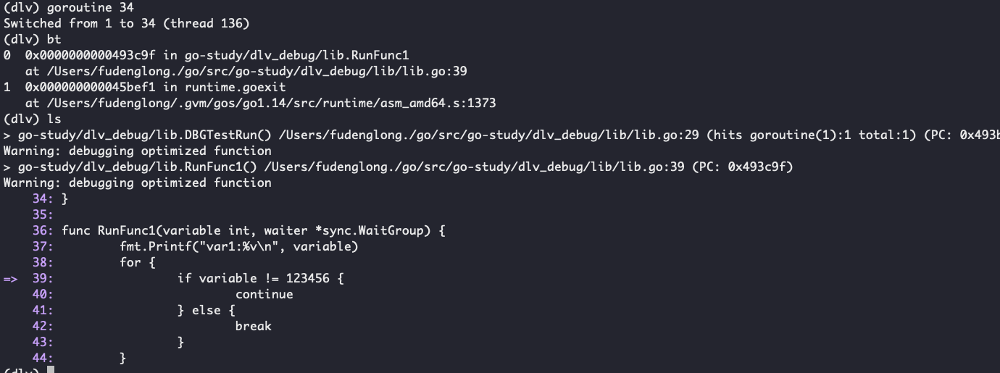
查看当前处在哪个
goroutine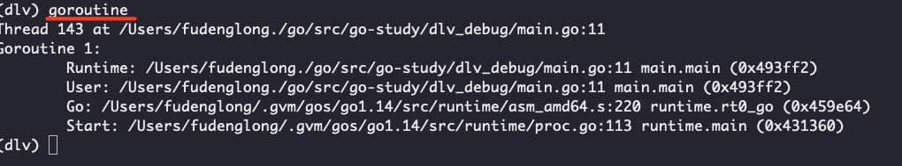
查看汇编代码
disass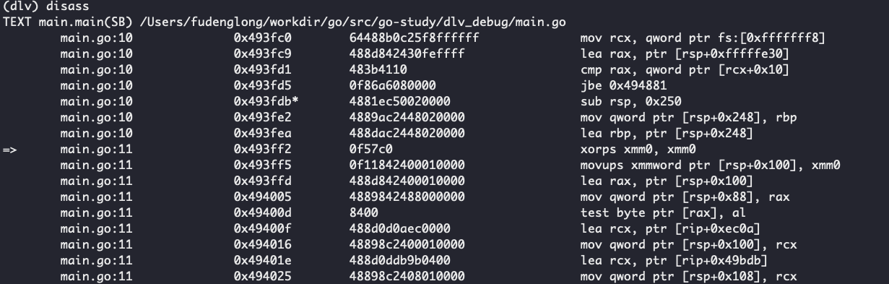
查看变量类型，
whatis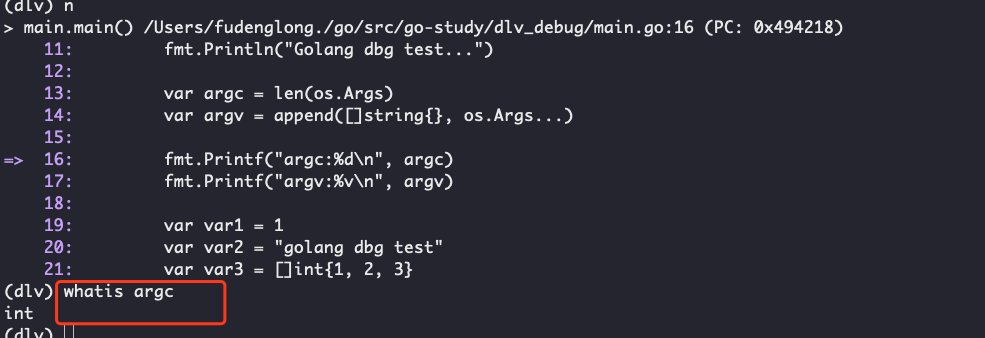